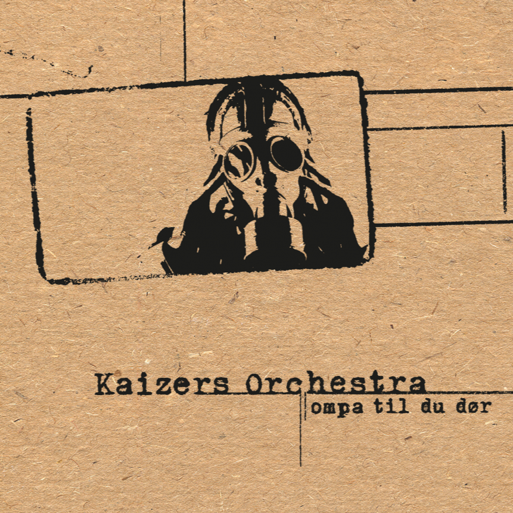

Ompa til du dør
|  |
|
Janove Ottesen (Vokal, kor og gitar)
Geir Zahl (El gitar, vokal og kor)
Terje Winterstø (El gitar og kor)
Helge Risa (Pumpeorgel og piano)
Jon Sjøen (Kontrabass og el bass)
Kaizers gjestemusikere:
Stian Carstensen: Banjo på 170 og Bak Et Halleluja.
Kaval fløyte på Dr. Mowincle og Resistansen.
Gitarsolo på Kontroll På Kontinentet.
Jan Kåre Hystad: Sax på Ompa Til Du Dør,
Bøn Fra Helvete, Dr. Mowincle og Resistansen.
Blåsere på Resistansen og
Mr. Kaizer Hans Constanze Og Meg:
Frode Hyrdland: Kornett
Svein H. Giske: Kornett
Siri Smith: Baryton
Tormod R. Flaten: Euphonium
Strykere på Ompa Til Du Dør, 170,
Rullett og Fra Sjåfør Til Passasjer:
Tor Johan Bøen: Fiolin
Tor JAran Apold: Fiolin
Bergmund Waal Skaslien: Bratsj
Johan Sebastian Blum: Cello
Kor på Dr. Mowincle:
Inger Undheim, Line Daatland og Elin Høyland
Coverdesign: Atle Øksendal
Innspilt og mikset i Duper Studio i Bergen av Jørgen Træen, eller Sir Dupermann, i løpet av et par sommeruker i 2001.
Mastret av Audun Strype.
Produsert av Stian Carstensen, Jørgen Træen, Ottesen/Zahl.
Stryk/blås arrangement: Ottesen og Sjøen.
Rullett: Carstensen
Kaizer takker: Remo Broiler, den første utenforstående som kicket vårt Orchestra, Tom, Therese og Sturle på TRP, Tollak "Feedback", Friestad for lyd, Hans Erik Løe, Kjetil Steinskog, Bård Ystanes, Martin og Dennis på Garra for gitarting, Jørgen og Real Ones for mandolin, Eivind Tollås for video, Jan for husvær, godt humør og fest, William Hut likeså (utenom husvær), Kristian og Crash for ting&tang, Geir Luedy for gode råd og fine vibes, Robert i Ai Phoenix for lo-fi piano suppert og Viggo Vea for datating til Jon.
Også takk til vennskapspupene i Bergen, Palace grill i Oslo og Cementen, Stavanger.
Spesiell takk til Susanne, Elin, Ragnhild, Kristin og ikke minst Oliver for glede og inspirasjon under komponer-ingen.
Gjestemusikere:
Stian Carstensen på diverse instrumenter
Utgitt med støtte fra Fond For Utøvende Kunstnere
Ompa til du dør er Kaizers Orchestras debutalbum og ble spilt inn i Duper studio i Bergen med Jørgen Træen over seks dager. Albumet kom 1. september og solgte over 100 000 eksemplarer i Norge det neste året. Ompa lå på VG-lista i hele 49 uker. Bandet vant både Spellemannpris og Alarmpris for albumet. Ompa til du dør er fortsatt det mestselgende debutalbumet i norsk rocks historie.